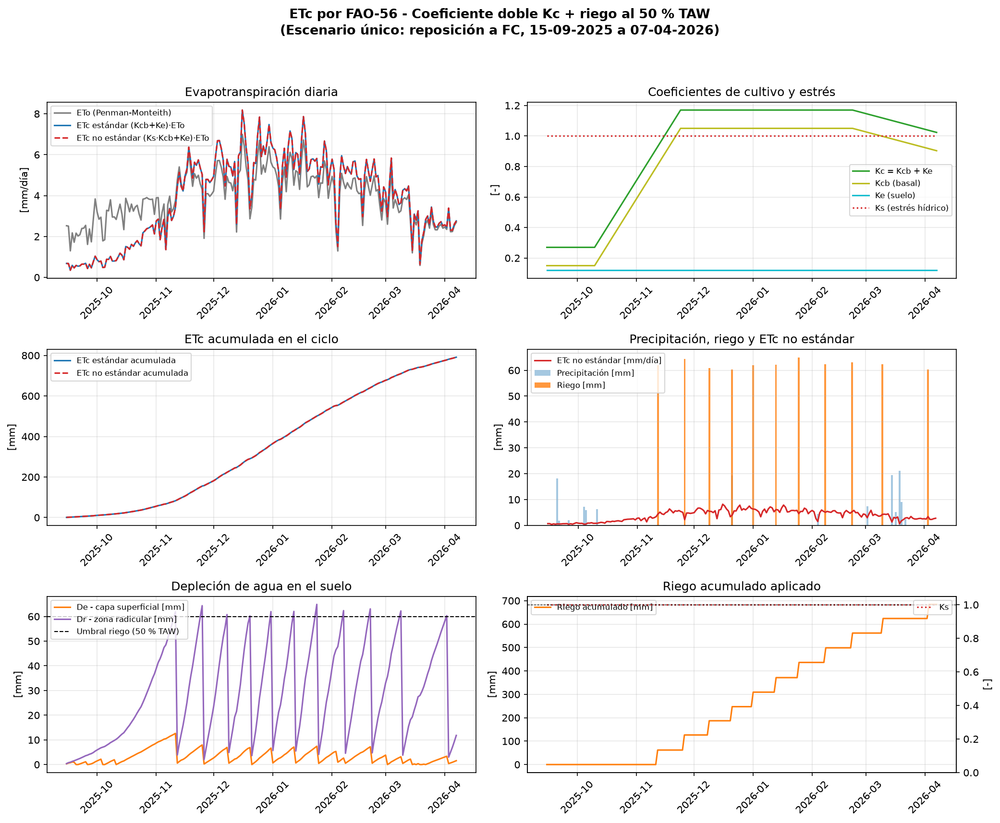
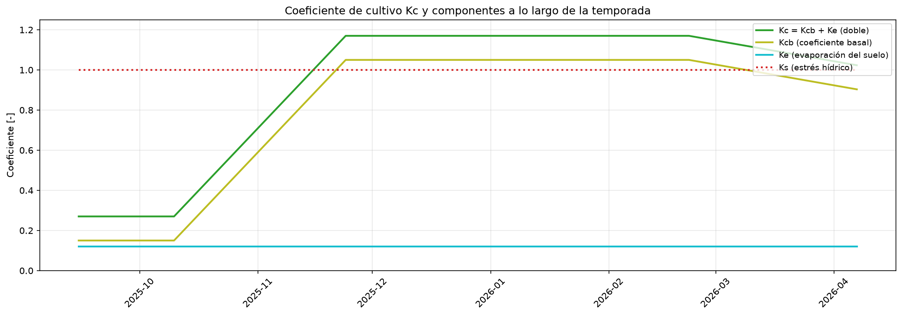
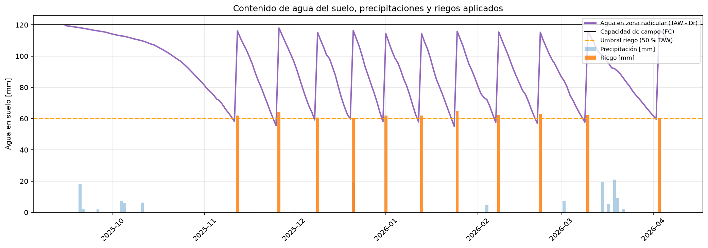

Proyecto de evapotranspiración del cultivo con riego al 50 % de TAW
| Indicador | Valor |
|---|---|
| Periodo simulado | 15-09-2025 a 07-04-2026 (205 días) |
| ETo media | 3.87 mm/día |
| ETc estándar total | 791.3 mm |
| ETc no estándar total | 791.3 mm |
| Riego total aplicado | 684.3 mm |
| Número de riegos | 11 eventos |
| Días con estrés hídrico | 0 de 205 |


